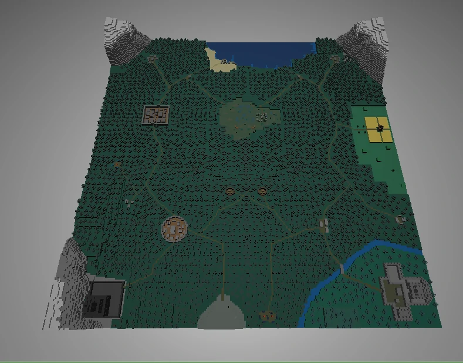
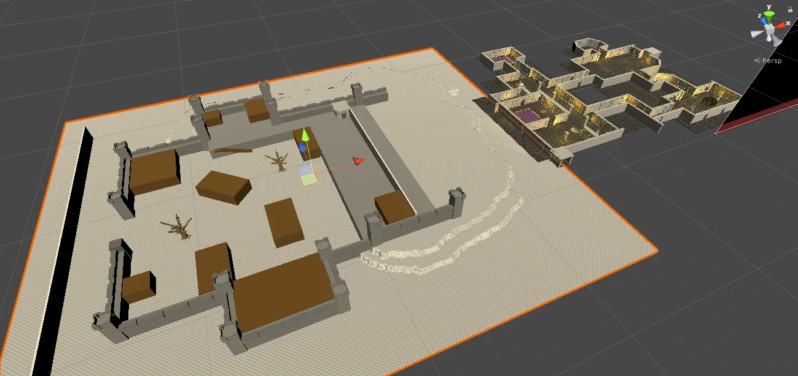
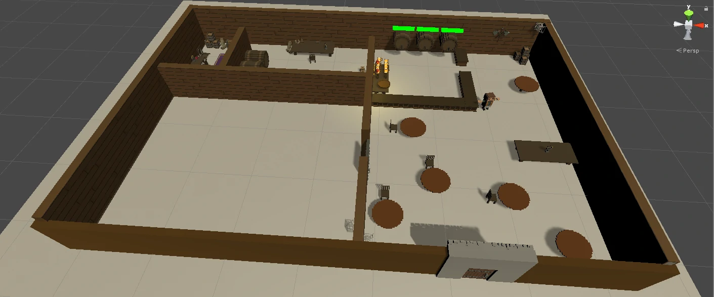
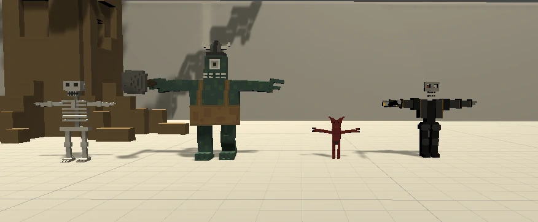
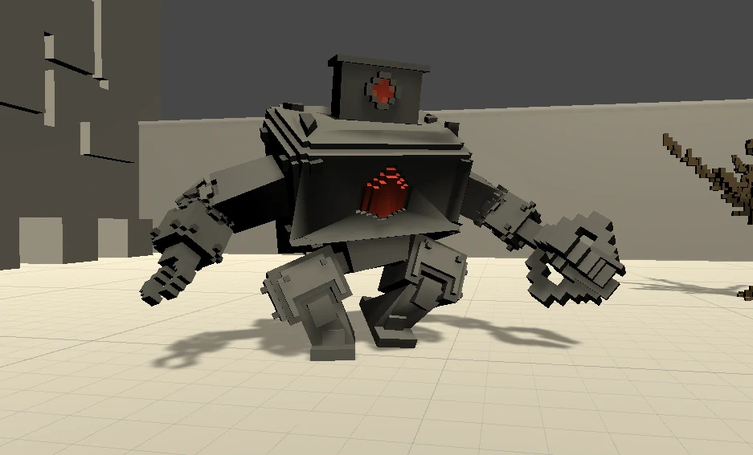

Dungeon
Wstrzymane
Typ projektuZespołowy / (2 osobowy)
Czas trwania~ 2 miesiące
Użyte oprogramowanieUnity Engine
Główne roleLead programmer / Level designe / Game design
Gra polega na zarządzaniu karczmą oraz walce z przeciwekami podczas ekspedycji. Karczma jest wzorowana na mechanice Moonlighter-a w której zarządzamy sklepem. W dowolnym momencie wcielamy się w karczmarza, którego głównym zadaniem jest szybka i efektywna obsługa gości. Będziemy musieli serwować trunków i jedzenia na czas, by zapewnić klientom zadowolenie i wysoki dochód. Dodatkowym elementem w tej fazie jest podsłuchiwanie ich rozmów, czyli zbieranie plotek i informacji, które stanowią paliwo dla naszej drugiej głównej działalności. Po zamknięciu karczmy, gdy gracz zgromadzi wystarczającą wiedzę, możemy zmienić strój w zbroję i wyruszyć w przygody jako poszukiwacz. Na przykład usłyszymy, że na bagnach ktoś zakopał skarb. Po wyjściu z karczmy gracz znajduje się w mieście, gdzie może zaopatrzyć się w zapasy lub przyjąć nowe zlecenie. A gdy przekroczy mury miasta aktywuje się mapa, na której wybiera się cel podróży. W semi-otwartych lokacjach gracz walczy przeciwnikami,wykorzystując miecz oraz kuszę. Eksploruje teren w poszukiwaniu celów zlecenia, które często kończą się potyczkami z bossami.
Odpowiadam za wszystko oprócz robienia modeli oraz tekstur





